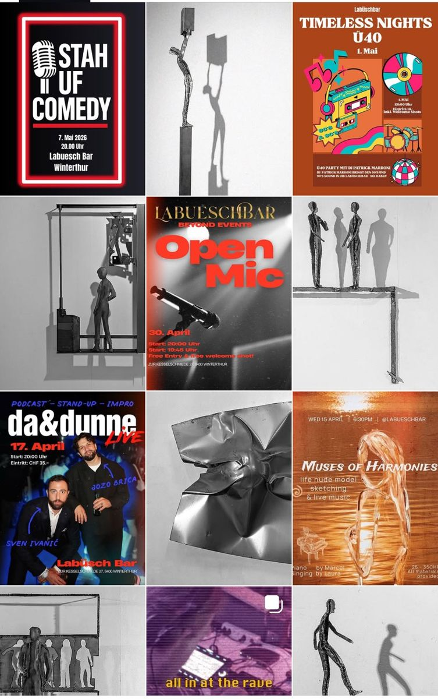

Für die Labüsch Bar in Winterthur habe ich von November 2025 bis Mai 2026 den Instagram-Kanal geführt und mehrere Flyer gestaltet.
Zu meinen Aufgaben gehörte es, die Events auf verschiedenen Eventplattformen einzutragen und so zu bewerben, Videos zu produzieren und eigene, wiederkehrende Social-Formate zu entwickeln. Wichtig war mir, die Kunst im Feed einzubinden, die die Bar zu einem einzigartigen Ort macht und zugleich Ruhe in den Feed brachte. Die Flyer entstanden jeweils passend zu den einzelnen Events.
Seit ich das Amt abgegeben habe, hat sich der Auftritt verändert. Der Screenshot oben zeigt den Kanal aus meiner Zeit.